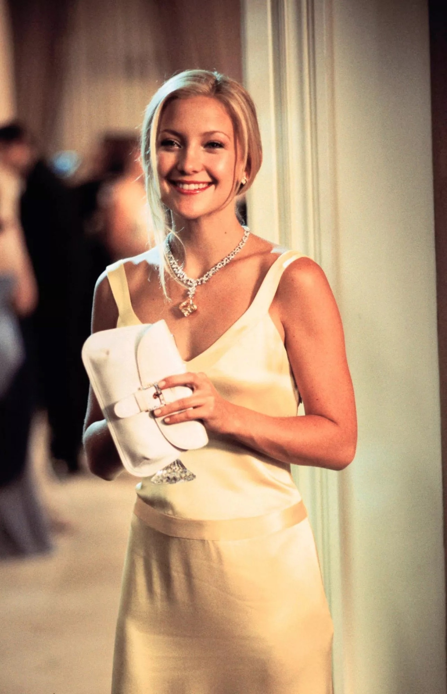

Behind the Scenes
Movie Background
How to Lose a Guy in 10 Days came out in 2003 and is still one of the most talked-about romantic comedies from the 2000s. The story was actually inspired by a short cartoon guidebook, but the movie took the idea and turned it into something much bigger. Kate Hudson and Matthew McConaughey weren’t even the first choices for the lead roles, but their chemistry ended up making the film what it is. One of the most memorable parts of the movie is Andie’s yellow dress at the end — it’s basically become a rom-com fashion icon. The mix of comedy, romance, and over-the-top moments is what made the movie stand out and keeps people watching it today.
Filming and Fun Behind the Scenes
Most of the movie was filmed in New York City, which gave it that fun, city-date vibe. They even filmed at a real Knicks game in Madison Square Garden and used the Staten Island Ferry for one of the big date scenes. A cool fact is that some of Kate Hudson’s laughs in the movie weren’t scripted at all — they were totally real, which made her connection with McConaughey feel even more natural. The movie ended up making over $177 million worldwide, which is huge for a rom-com. Even now, people still list it as one of their favorite romantic comedies because it’s funny, a little dramatic, and has that sweet message about honesty in relationships.